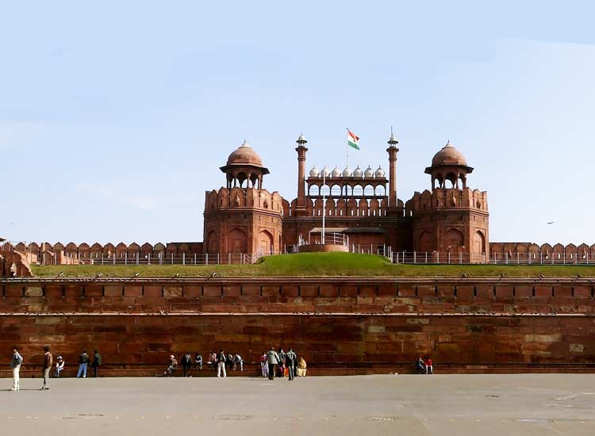

Taj Mahal, Agra
Qutub Minar, Delhi
Red Fort, Delhi
Charminar, Hyderabad
Mysore Palace, Mysore
Hampi, Karnataka
Gateway of India, Mumbai
Thousand Pillars Temple - Telangana
Taj Mahal, Agra

One can go on praising the Taj Mahal, a UNESCO World Heritage Site, with an uninterrupted flow of adjectives – magnificent, outstanding, amazing and incredible. However, none of those can accurately do justice to its beauty. The only way to do that is
to visit this incredible structure made of pure white marble. Everything about it reflects grandeur, from its minarets to its dome. Shah Jahan had this monument built for his wife Mumtaz to express his undying love for her, and today, lovers
cite this as an example when expressing their love to each other. The construction of the Taj Mahal, which is also one of the must visit UNESCO World Heritage Sites In India, took around 22 years to complete, and no wonder, the effort of every
year is reflected in its construction.
Qutub Minar, Delhi

The Qutub Minar, another UNESCO World Heritage Site, is an incredible example of Indo-Muslim architecture that touches the skies at an incredible height of 240ft. It is named after Qutub-ud-din Aibak, the first Muslim ruler of North India. The place where
Qutub Minar stands is usually regarded as the site of the first Muslim kingdom in northern India. Verses from the Quran are finely carved onto its red sandstone stories, with most of them being mostly in Arabic. Another interesting fact is
that the first mosque in India, Quwwat-ul-Islam Masjid, is located at the foot of the Qutub Minar.
Red Fort, Delhi

Red Fort, a UNESCO World Heritage Site, is a symbol of the Mughal Empire at its peak. The enormous size, aesthetic proportions and style, all represent an age of unrestrained opulence. Amidst the unceasing bustle of Old Delhi, stands this colossal monument,
evoking nothing but admiration from the onlookers. Red Fort, which is one of the popular forts and palaces in India, was also built by the Mughal emperor, Shah Jahan. It took over 10 years to complete, and was constructed when the emperor
decided to shift his capital from Agra to Delhi. Back then, the fort was known as Qila-e-Mubarak. It is from the ramparts of Red Fort that the Prime Minister delivers his speech on Independence Day.
Charminar, Hyderabad

There are many theories attributed to the building of the Charminar. According to one of them, Muhammad Quli Qutub Shah had this monument built in 1591 to express his reverence to Allah. According to another theory, Charminar was built to celebrate the
end of plague in the city. Legend also has it that there is a secret tunnel running from this incredible monument to Golconda Fort. Whatever the reason, one cannot deny that this architecture is elegant, stylish and exquisite. It’s called
Charminar because of its four pillars, each of which measure almost 20 meters from the side. They also open to balconies that circle them. These minarets never fail to captivate onlookers and passers-by. Any visit to Hyderabad is incomplete
without visiting the Charminar.
Mysore Palace, Mysore

You cannot fathom the greatness of the Mysore Palace unless you come face to face with it. The grandness of its proportions would have you believe that the palace had sprung out of a fairytale. It was built by the British architect Lord Henry Irwin in
1912. Mysore Palace was built in Indo-Saracenic style and features intricate interiors. The interiors of the palace are adorned with ornate ceilings, jeweled corridors, stained glass windows and open mandaps. You also come across several Wadiyar
memorabilia, including the jeweled throne. Mysore Palace also hosts the festivities of Dasara festival. Explore Mysore tour packages.
Hampi, Karnataka

The ruins of Hampi, a UNESCO World Heritage Site, situated in Karnataka, is without a doubt, one of the 15 historical places in India that you can’t miss. Hampi is a place which seems to be stuck in time, waiting for daily life to resume, on its streets,
on its temples and in its halls. In every corner here, you come across something worthy of being admired. Every stone tells a story of the past. Hampi was built by the great ruler Deva Raya II of the Vijaynagara Empire.
Gateway of India, Mumbai

One of the most popular historic places in India is the Gateway of India. One of the most iconic landmarks in the country, it was built by the British in 1924. It was actually built as an entry and exit point during the British period, and inaugurated
by the Viceroy, the Earl of Reading. Today, however, it has become a favorite picnic spot for locals and tourists alike. On any given day, one can spot dozens of street vendors serving tasty snacks along with balloon sellers, thereby lending
a happening vibe to the entire place. The Gateway of India has been reinforced repeatedly over the years with yellow basalt and concrete. In addition, the turrets are decorated with delicate lattice work.
Thousand Pillar Temple, Warangal
What is the Thousand Pillar Temple? The most popular place to visit in Warangal is the Thousand Pillars Temple, located at the base of Hanamkonda hill. It was built in 12th century by the Kakatiya King Rudra Deva. Dedicated primarily to Lord Shiva, this
temple is also known by the name of Sri Rudreshwara Swamy Temple.